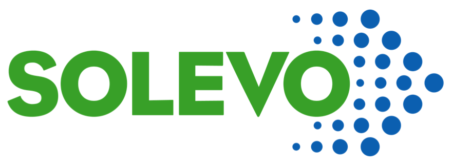
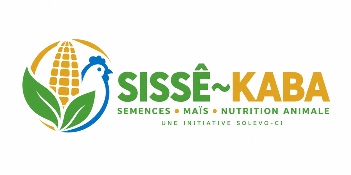

Producteurs de maïs
Un accompagnement en semences et intrants, avec une mise en relation pour la commercialisation de la récolte.

UNE INITIATIVE FEED ET SEED · CÔTE D’IVOIRE
Relier les producteurs de maïs aux éleveurs et aux fabricants d’aliments.
Un projet national pour faciliter les débouchés du maïs local et l’approvisionnement des acteurs de la nutrition animale.
Comparer mon coût d’aliment
Un accompagnement en semences et intrants, avec une mise en relation pour la commercialisation de la récolte.
Un accès facilité aux offres de maïs et un accompagnement pour évaluer les coûts de l’aliment formulé.
SIMULATION INDICATIVE
Renseignez le prix réellement payé et comparez une même espèce, une même phase et un même poids. Le coût formulé doit être établi avec votre conseiller selon vos matières premières.
Complétez les champs pour afficher la comparaison.
Un coût inférieur ne garantit pas une performance équivalente. La qualité nutritionnelle, les conditions sanitaires et la formule doivent être validées avec l’équipe technique. Aucun renseignement saisi ici n’est envoyé à un serveur.
Télécharger la présentation Coûts & devis MG2MIX (.pptx)La présentation contient un exemple indicatif de 1 000 sujets par filière. La comparaison personnelle ci-dessus reste dans votre navigateur.
RENDEZ-VOUS DE LANCEMENT ANNONCÉ
Du 20 au 22 novembre 2026 · Parc des sports d’Abidjan
Avec les segments FEED et SEED de SOLEVO-CI. Un lancement à Abidjan pour un projet destiné à toute la Côte d’Ivoire.